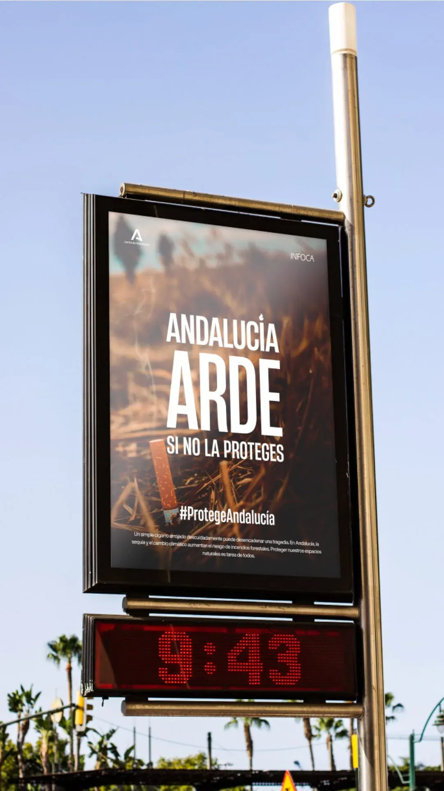
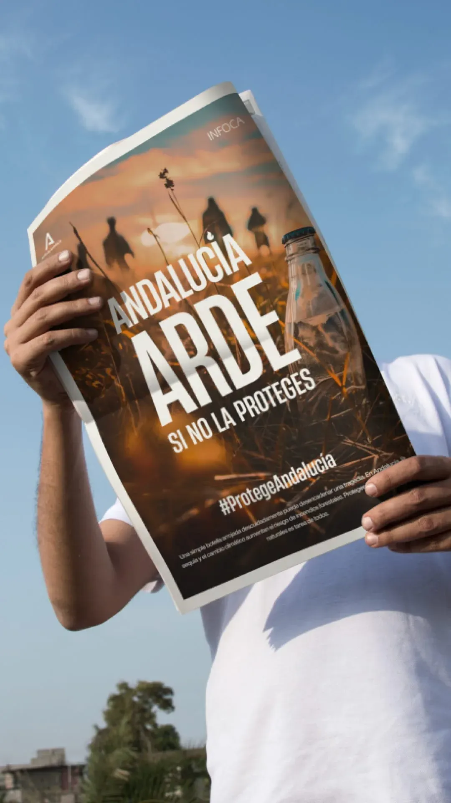
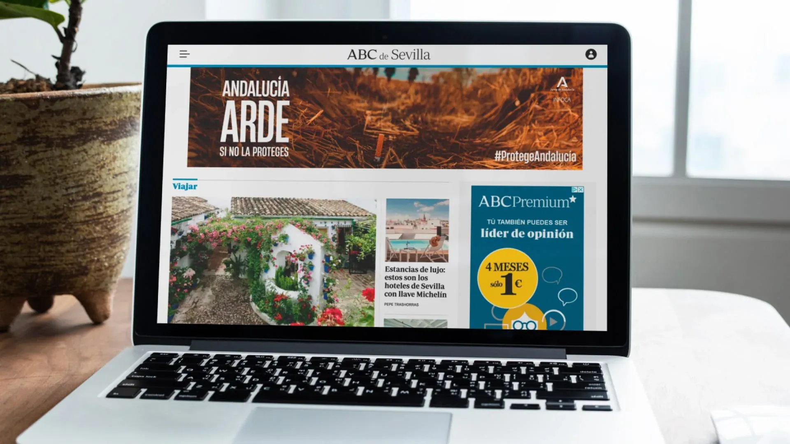

Infoca
INFOCA es mucho más que una campaña visual; es una intervención estratégica que acompaña,
visibiliza y dignifica a quienes cada año enfrentan uno de los desafíos más exigentes en la
protección del entorno natural. Concebido dentro de la comunicación oficial de prevención y
actuación contra incendios forestales en Andalucía, este proyecto parte de una necesidad
clara:
traducir un mensaje técnico y crítico en una narrativa visual comprensible, contundente y
accesible para toda la ciudadanía.
El diseño está completamente al servicio de la claridad. Cada pieza busca facilitar la
comprensión de acciones, protocolos y comportamientos responsables, sin perder la dimensión
humana que existe detrás de cada intervención. INFOCA no comunica desde el alarmismo,
comunica
desde la responsabilidad compartida. Desde la conciencia colectiva. Desde la idea de que
proteger el entorno es una tarea que nos implica a todos.
Más allá de lo funcional, la propuesta se centra en humanizar la información técnica sin
restarle rigor. Se construye un lenguaje visual directo, reconocible y sólido, capaz de
sostener
un mensaje de alto impacto social. El resultado no solo informa, también genera empatía y
respeto hacia quienes trabajan en primera línea, transformando datos complejos en
comunicación
efectiva y memorable.
Este proyecto refleja mi capacidad para abordar temáticas sensibles con estrategia y
precisión,
integrando diseño y narrativa para construir soluciones que funcionan en contextos reales.
Porque cuando el diseño tiene propósito, no solo comunica: protege, conciencia y conecta.


